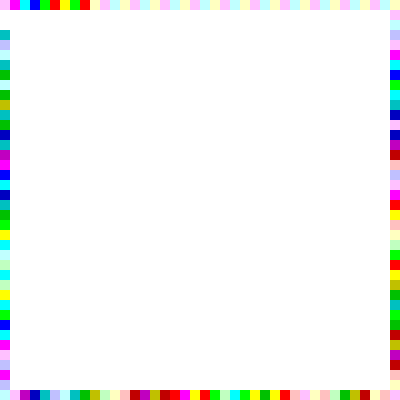

This is an entirely JS application feel free to look at the source code. Png editing thanks to Robert Eisele
Heres an example
Theres a few improvements to do on this; make the programs terminate, let users select start colour... I might get round to that someday.